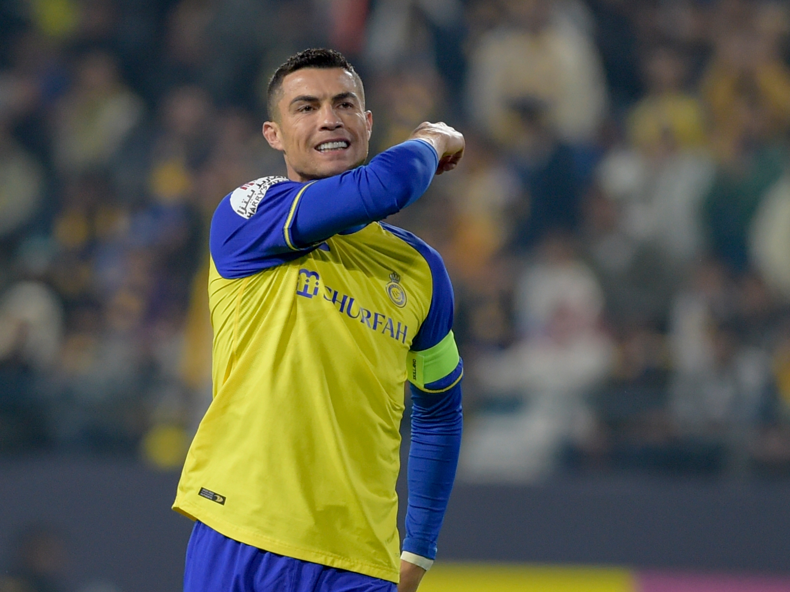

"Es simplemente una mala idea porque terminaría canibalizando a las otras disciplinas deportivas", enfatizó Ceferin, oponiéndose otra vez a la idea que impulsa el titular de la FIFA, Gianni Infantino.
"La Copa del Mundo debe ser cada cuatro años para que siga siendo interesante. Es el mayor evento del fútbol y más del 75 por ciento de los aficionados en el mundo se oponen a la idea de hacerla cada dos", añadió en declaraciones realizadas durante su visita a la Expo 2020 de Dubai.
Finalmente, y en relación a la nueva ola de coronavirus que afecta a Europa y el resto del mundo y condiciona el normal desarrollo de las ligas, Ceferin se mostró "optimista" para seguir jugando.
"Soy optimista, los grandes eventos del fútbol aún podrán continuar y los espectadores podrán verlos. Preocuparse no ayuda, primero tienes que resolver los problemas y seguimos siendo optimistas y creemos que todo saldrá bien. La situación el año pasado fue peor porque no sabíamos sobre el virus y era más difícil", cerró.
Cristiano Ronaldo comenzó a darle la razón al Al Nassr por haber adquirido sus servicios. El portugués hizo los cuatro goles del 4-0 que le propinó su club al Al Wahda este jueves, en la Primera División de Arabia Saudita. Fue una goleada con récord para 'CR7', quien pasó la marca de 500 goles con clubes en ligas. A sus 38 años, tiene 503 dianas en su carrera.